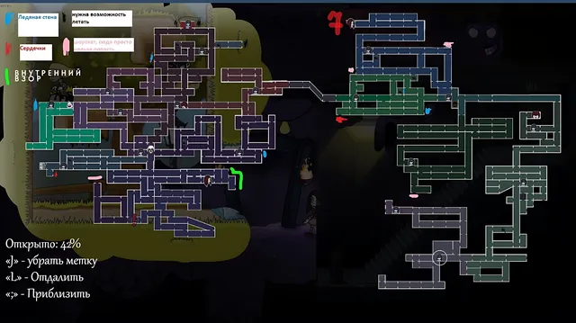
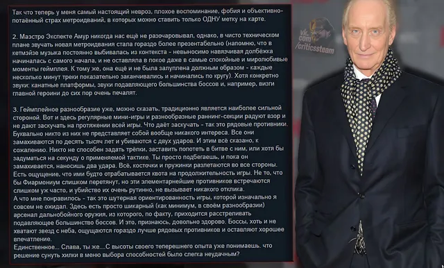
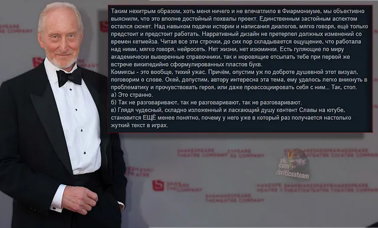

- Давно же не было честных обзоров, встречайте профессиональную критику от нашего дорогого куратора на игру:
» Fearmonium
🤝 #ЧестныйОбзор@criticssteam
🎹 #ОбзорыЗнаменитостей@criticssteam CriticsSteam - Fearmonium
» Fearmonium
🤝 #ЧестныйОбзор@criticssteam
🎹 #ОбзорыЗнаменитостей@criticssteam CriticsSteam - Fearmonium